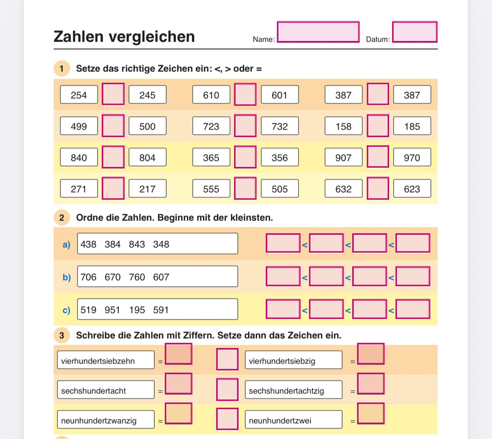

PDF Text Field
Turn a worksheet into a fillable PDF. PDF Text Field helps teachers turn writing lines, boxes and checkboxes into real form fields.
Who it is for
For teachers and professionals who want to provide worksheets as fillable PDFs.
What the app does
Detect fields
Recognise writing lines, boxes and checkboxes on a worksheet.
Review and edit
Check and edit the detected fields.
Save as a form
Save a PDF with real form fields so children can type instead of writing by hand.
How it looks

How it works
- Open: Open the PDF worksheet in the tool.
- Review: Check the detected form fields and edit them where needed.
- Save: Save the worksheet as a fillable PDF and make it available to the children.
Development and contact
The app is in development. Questions or suggestions? Write to support@sichtnah.com.